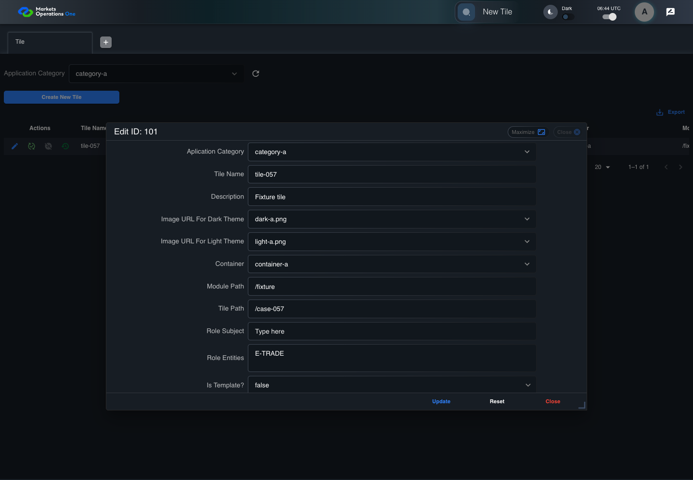
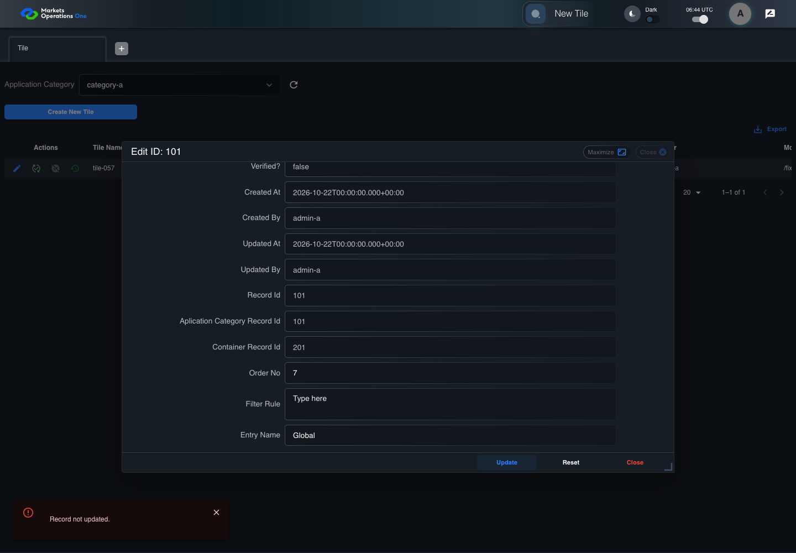

BFF-ADM-057 current BFF administration through actual UI
PASS · application/run-072/bff-adm-057-current-bff-administration-through-actual-ui-95c0d6f1770a-attempt-1 · ACTUAL_APPLICATION_LOCAL_SERVICES
Actual current React and exact-current BFF admin controllers/services/JPA with actual migration DDL in disposable PostgreSQL. Controlled OUD/EMS2 identities and local Spring bootstrap. Fixture SQL seeds/mutates isolated records; service errors are actual database errors. Undefined agreed messages remain unresolved acceptance.
2026-10-22T06:44:52.250Z to 2026-10-22T06:45:00.400Z
Assertions and result · Artifact manifest · Exact run inputs and source hashes
Result SHA-256:1d1072e41e5d36db4746471c15b2070603b8375aad51ecd61944436cd1efce47Machine observations
- actual-identity-projection.json
61758812c140556d62ebf6acde2a0ba1c8d7092535bd0ae029a96ab959042000 - baseline-inputs.json
481769675641fae6bc0a8d2b13e82722c41a50df1038231eb59040d5ba50b451 - bff-boundary.json
779bd49d08c71864ed796bc2d8abcb877dae3f455ad0151adb60a1f37dcd7316 - committed-ui-submission-comparisons.json
d0d842e302915f33a05b2b9b7b8db59b9ec2733ad149c7d01508a2a7dab7118f - empty-filter-rule-representation.json
1f501649ffff72d6b1df3e61d1879bab2b1e455ccb7ab37ecd503c3cbbabb06e - fixture-step-10.json
fde1dab4a123cd4f2ba675ed602c79dac3677864eca1b26e69c8ff29f2b4e4f3 - fixture-step-11.json
2d29f132ac2e5f70c2910ebaed630afa12134a87c879d271882ca6b393a687c3 - fixture-step-6.json
fa0a418a7e65d1babdfd11901f4aeec603bef8c983610e1475437e6bf5ce5dfd - fixture-step-7.json
436942f8b64f48d27fecb87e5564f518e37c18d8a14578899c1430d4d6d2a8d4 - fixture-step-8.json
f2d85e5448c6cd1632202d82a67abacebb795830b1f1deef01bf11705d1ef671 - fixture-step-9.json
1bd40134225ddbab0c27bba6f66784b21c10eda541e7909119740b3fbdce7c7d - initial-persisted-records.json
444b29a4c929fe66af17edc403cf508ae9d9e547b9d266846c7c27da2083b36f - persisted-after-submit.json
98afa32a5d5ce731d97408ab14d7e1fbc648004d152c8031e128bf753b21306e - reference-snapshot-3.json
d659059b631cfe2f387cd3fe923d0dafaf824fa2800baad93186e727e9919c26 - reference-snapshot-4.json
01bbb08a6237f6ce0739b4e715dece4832616b0d25f06a3b7a5b74819cfea1c0 - ui-origin-bff-requests.json
1947929374f33e61f7c1672d58078142a16abea72eaa56ec918dae5b5f30b2ed
Screenshot capture: CAPTURED. Named frames: 23.
Step screenshot bindings: COMPLETE. 22/22 canonical steps have execution screenshots.
Bindings measure structural coverage only. They do not establish screenshot content quality or relevance.
Screenshot content review: NOT_REVIEWED. Recorded context: 0/23 frames. Identical image bytes: 0 repeated frames. Recorded context does not establish human visual review.
Canonical step timeline
Given Admin A uses subject "admin-a" with role "FMO_ADMIN" in an isolated authenticated browser
Execution: PASSED.1. step-01 Visible state after step 1: Given Admin A uses subject "admin-a" with role "FMO_ADMIN" in an isolated authenticated browser
2026-10-22T06:44:55.482Z · 1440×1000
Step: /Users/lushevol/code/github/ratan-release-impact/workbench/tasks/ui-test-coverage-20261022/test-cases.md:17134
SHA-256:3a0e5f8eefd8518608d9f1756751a569fb8d9b1a5c6558d741ceaa316b2de3acAnd the controlled Tile fixture records the initial grid rows and persisted values
Execution: PASSED.2. step-02 Visible state after step 2: And the controlled Tile fixture records the initial grid rows and persisted values
2026-10-22T06:44:55.628Z · 1440×1000
Step: /Users/lushevol/code/github/ratan-release-impact/workbench/tasks/ui-test-coverage-20261022/test-cases.md:17135
SHA-256:6e4af9909fa9c2293a1b969c25ed21c03c00b01b63303d4ef0a362d67cdb1084And Category 101 has label "category-a" and Import Map 201 has Module Name "container-a"
Execution: PASSED.3. step-03 Visible state after step 3: And Category 101 has label "category-a" and Import Map 201 has Module Name "container-a"
2026-10-22T06:44:55.694Z · 1440×1000
Step: /Users/lushevol/code/github/ratan-release-impact/workbench/tasks/ui-test-coverage-20261022/test-cases.md:17136
SHA-256:9d00ac4bad7fe21bd60ab432ead973a5d7164da8dea2623c1bfccf7866e5de76And both references belong to "FMO_ADMIN" and the Tile page category filter value is Category 101
Execution: PASSED.4. step-04 Visible state after step 4: And both references belong to "FMO_ADMIN" and the Tile page category filter value is Category 101
2026-10-22T06:44:55.761Z · 1440×1000
Step: /Users/lushevol/code/github/ratan-release-impact/workbench/tasks/ui-test-coverage-20261022/test-cases.md:17137
SHA-256:0cf3479e5677ddb516e2760a051ffa1c95eca950a133f581ecf131a915f52757And the Tile grid has record "101" owned by "FMO_ADMIN"
Execution: PASSED.5. step-05 Visible state after step 5: And the Tile grid has record "101" owned by "FMO_ADMIN"
2026-10-22T06:44:55.828Z · 1440×1000
Step: /Users/lushevol/code/github/ratan-release-impact/workbench/tasks/ui-test-coverage-20261022/test-cases.md:17138
SHA-256:f683bcec2fbab95dd3bbef831d626c0b04bf54601e03d6a90425d40b28c83e2aAnd the baseline fixture data defines "Tile Name" as "tile-057"
Execution: PASSED.6. step-06 Visible state after step 6: And the baseline fixture data defines "Tile Name" as "tile-057"
2026-10-22T06:44:55.895Z · 1440×1000
Step: /Users/lushevol/code/github/ratan-release-impact/workbench/tasks/ui-test-coverage-20261022/test-cases.md:17139
SHA-256:ff2b629f1c4fb5ece797097df3f185834cfdee7ebed4c553529616452eec8d1aAnd the baseline fixture data defines "Module Path" as "/fixture"
Execution: PASSED.7. step-07 Visible state after step 7: And the baseline fixture data defines "Module Path" as "/fixture"
2026-10-22T06:44:55.965Z · 1440×1000
Step: /Users/lushevol/code/github/ratan-release-impact/workbench/tasks/ui-test-coverage-20261022/test-cases.md:17140
SHA-256:046eb75214accf8795b8f5a8d21dab3d51f35a46d56318a7ccc4bb2f3cf9e255And the baseline fixture data defines "Tile Path" as "/case-057"
Execution: PASSED.8. step-08 Visible state after step 8: And the baseline fixture data defines "Tile Path" as "/case-057"
2026-10-22T06:44:56.031Z · 1440×1000
Step: /Users/lushevol/code/github/ratan-release-impact/workbench/tasks/ui-test-coverage-20261022/test-cases.md:17141
SHA-256:41b3d5df900d2545ce3b3af88abee6eb60678dd1cd88fdd232d9a3ffac840015And the baseline fixture data defines "Role Entities" as "E-TRADE"
Execution: PASSED.9. step-09 Visible state after step 9: And the baseline fixture data defines "Role Entities" as "E-TRADE"
2026-10-22T06:44:56.115Z · 1440×1000
Step: /Users/lushevol/code/github/ratan-release-impact/workbench/tasks/ui-test-coverage-20261022/test-cases.md:17142
SHA-256:c8172030686a79ed790fb7e131fe92647b79278b3c770f89780258400f982504And the baseline fixture data defines "Filter Rule" as ""
Execution: PASSED.10. step-10 Visible state after step 10: And the baseline fixture data defines "Filter Rule" as ""
2026-10-22T06:44:56.199Z · 1440×1000
Step: /Users/lushevol/code/github/ratan-release-impact/workbench/tasks/ui-test-coverage-20261022/test-cases.md:17143
SHA-256:83a403ece6cae104f9279899384f82e1c07d3db5eb28f0c2586d5b4e2b6c52eaAnd the baseline Tile references use "Aplication Category" "category-a" and "Container" "container-a"
Execution: PASSED.11. step-11 Visible state after step 11: And the baseline Tile references use "Aplication Category" "category-a" and "Container" "container-a"
2026-10-22T06:44:56.247Z · 1440×1000
Step: /Users/lushevol/code/github/ratan-release-impact/workbench/tasks/ui-test-coverage-20261022/test-cases.md:17144
SHA-256:c08219305b03304b8fa5e1bd4f480a5cddb4824241481934ed60baacc3335b2eAnd the next BFF repository save throws a controlled database exception
Execution: PASSED.12. step-12 Visible state after step 12: And the next BFF repository save throws a controlled database exception
2026-10-22T06:44:56.299Z · 1440×1000
Step: /Users/lushevol/code/github/ratan-release-impact/workbench/tasks/ui-test-coverage-20261022/test-cases.md:17145
SHA-256:31ac99d88bbb8151fa9c6f802ab9f02bcdc27b1f76e748c7a8d4583539c1366bWhen Admin A clicks the button labeled "Edit" in the Tile grid row with "Record Id" "101"
Execution: PASSED.
13. step-13 Visible state after step 13: When Admin A clicks the button labeled "Edit" in the Tile grid row with "Record Id" "101"
2026-10-22T06:44:56.679Z · 1440×1000
Step: /Users/lushevol/code/github/ratan-release-impact/workbench/tasks/ui-test-coverage-20261022/test-cases.md:17146
SHA-256:09abaf88c2aecb604ee5bab319d291550dd69cfcd1ab2d8a027a60b2d5b11825Then the dialog titled "edit ID: 101" is visible on the Tile administration page
Execution: PASSED.14. step-14 Visible state after step 14: Then the dialog titled "edit ID: 101" is visible on the Tile administration page
2026-10-22T06:44:56.765Z · 1440×1000
Step: /Users/lushevol/code/github/ratan-release-impact/workbench/tasks/ui-test-coverage-20261022/test-cases.md:17147
SHA-256:592599eb771fc13baf1e614cc4d2fa2252f81466066751525cebd04411dae5f0When Admin A fills the textbox labeled "Tile Name" with "rejected-change" in dialog "edit ID: 101"
Execution: PASSED.15. step-15 Visible state after step 15: When Admin A fills the textbox labeled "Tile Name" with "rejected-change" in dialog "edit ID: 101"
2026-10-22T06:44:57.265Z · 1440×1000
Step: /Users/lushevol/code/github/ratan-release-impact/workbench/tasks/ui-test-coverage-20261022/test-cases.md:17148
SHA-256:e19290ed1729f4eed6634ddc652dcbb7c3355a7b188e3bef4517ec000c1cc487And Admin A fills the textbox labeled "Module Path" with "/fixture" in dialog "edit ID: 101"
Execution: PASSED.16. step-16 Visible state after step 16: And Admin A fills the textbox labeled "Module Path" with "/fixture" in dialog "edit ID: 101"
2026-10-22T06:44:57.720Z · 1440×1000
Step: /Users/lushevol/code/github/ratan-release-impact/workbench/tasks/ui-test-coverage-20261022/test-cases.md:17149
SHA-256:2c5e95be13674fdf4cb961770ebdb772005a3fc43a4cc60ea1192baa73b5979dAnd Admin A fills the textbox labeled "Tile Path" with "/case-057" in dialog "edit ID: 101"
Execution: PASSED.17. step-17 Visible state after step 17: And Admin A fills the textbox labeled "Tile Path" with "/case-057" in dialog "edit ID: 101"
2026-10-22T06:44:58.155Z · 1440×1000
Step: /Users/lushevol/code/github/ratan-release-impact/workbench/tasks/ui-test-coverage-20261022/test-cases.md:17150
SHA-256:2a039a711e3757de222adf1bccb4551035d262ec16d868eead472b09c544bedcAnd Admin A fills the textarea labeled "Role Entities" with "E-TRADE" in dialog "edit ID: 101"
Execution: PASSED.18. step-18 Visible state after step 18: And Admin A fills the textarea labeled "Role Entities" with "E-TRADE" in dialog "edit ID: 101"
2026-10-22T06:44:58.621Z · 1440×1000
Step: /Users/lushevol/code/github/ratan-release-impact/workbench/tasks/ui-test-coverage-20261022/test-cases.md:17151
SHA-256:b7f1a9af10e47d42261a133184a3a1167727c1ac0ef53b57a166c0b3bcabb8a2And Admin A fills the textarea labeled "Filter Rule" with "" in dialog "edit ID: 101"
Execution: PASSED.19. step-19 Visible state after step 19: And Admin A fills the textarea labeled "Filter Rule" with "" in dialog "edit ID: 101"
2026-10-22T06:44:59.067Z · 1440×1000
Step: /Users/lushevol/code/github/ratan-release-impact/workbench/tasks/ui-test-coverage-20261022/test-cases.md:17152
SHA-256:5efe1cfff4b0feb3af4d3ca281d3014753d31a6c9ea02fb764a0771cc22aac90And Admin A clicks the button labeled "Update" in dialog "edit ID: 101"
Execution: PASSED.20. step-20 Visible state after step 20: And Admin A clicks the button labeled "Update" in dialog "edit ID: 101"
2026-10-22T06:44:59.372Z · 1440×1000
Step: /Users/lushevol/code/github/ratan-release-impact/workbench/tasks/ui-test-coverage-20261022/test-cases.md:17153
SHA-256:b68474a5cc2e2085d7cf4e2d7de0e91a4e5f48c4de10a0836e2ae3b64536013fThen the alert with severity "error" in the portal snackbar contains the exact text "Record not updated."
Execution: PASSED.21. step-21 Visible state after step 21: Then the alert with severity "error" in the portal snackbar contains the exact text "Record not updated."
2026-10-22T06:44:59.453Z · 1440×1000
Step: /Users/lushevol/code/github/ratan-release-impact/workbench/tasks/ui-test-coverage-20261022/test-cases.md:17154
SHA-256:66d0329f1bde0a9fd11d1e892ec314bd9ff17a9db1a5a5de54718fcb33299a24And the Tile data grid with column "Record Id" row identifiers and loaded field values equal the initial grid snapshot on the Tile administration page
Execution: PASSED.22. step-22 Visible state after step 22: And the Tile data grid with column "Record Id" row identifiers and loaded field values equal the initial grid snapshot on the Tile administration page
2026-10-22T06:44:59.602Z · 1440×1000
Step: /Users/lushevol/code/github/ratan-release-impact/workbench/tasks/ui-test-coverage-20261022/test-cases.md:17155
SHA-256:786389d141032c047f8feedc9a99b8c616929de64fd35f12240c4a105e8a12fe
Additional named frames

The final visible state after the named test assertions.
2026-10-22T06:44:59.722Z · 1440×1000Step: Test source: /Users/lushevol/code/github/ratan-release-impact/workbench/e2e/audit-specs/bff-admin.spec.ts:11
SHA-256:
fc4ac6294a64dd9dd436c86b8d34dd17f5b0afe5dd4ffc3a820fe5cb876c01a8Screenshots establish visible state only. Assertions and traces support functional claims.